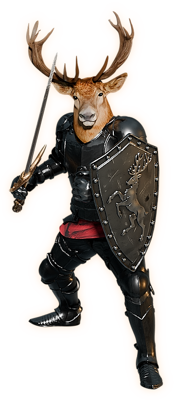
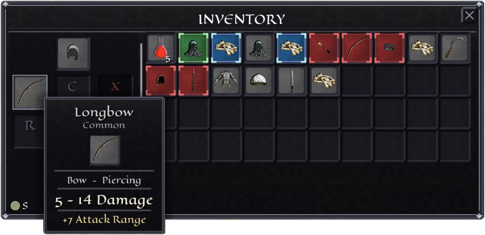

Bulwark Conflagration
The burning wall
Highest defense in the game, and the fire never stops. Spread ignite across a whole pack, hold the line, then detonate every burn at once with Conflagrate.
Above the desecrated throne of Gremland, the sky perforated as ten tails of brilliant radiance crashed down from the heavens, shattering the partitions between the primordial fields. Distinct bodies, and concepts became one. Power is there for those willing to grasp it, but until then, the lands are left without clarity, without reason, without mercy. These are…
An isometric dark fantasy MMORPG

The Lands Without is a classic isometric MMORPG of deep forests, old ruins, and open war. Your journey begins in Oakvale, a frontier where monsters hunt in packs, bosses hold their ground, and the treasure is worth the danger.
Combat is honest about its stakes. A single even fight will test you. Two enemies at once is real trouble. Three is a death sentence. Survive, and you recover in seconds, ready to push deeper.
Every character grows along a chosen path, each with its own skill tree, capstone, and way of ending a fight.
The burning wall
Highest defense in the game, and the fire never stops. Spread ignite across a whole pack, hold the line, then detonate every burn at once with Conflagrate.
The detonation
Seed the field with resonant orbs, then set them all off in a single burst that tears open a Void Rift. The hardest-hitting area damage of any path.
The executioner
Stack Rend on a single target, bleed it white, and finish with Killshot. Nothing kills one thing faster than a Shade who has done the setup.
Beyond the wilds, players fight players for territory. Castles anchor the map: hold one and you hold the land around it, along with everything that land produces.
Sieges are pitched battles at walls and gates. Defenders fight from the ramparts with the castle itself as their great equalizer. Attackers bring numbers, siege equipment, and sappers to break a way through. When the dust settles, someone new may be flying their banner over the keep.
Between sieges, contested zones burn with ongoing war, and contracts pay you to pick a side.
Gear in The Lands Without is not a treadmill. Base items stay viable from the first hour to the last: a short sword found at level one, rolled with the right affixes or reforged at the smithy, can still compete at the end of the road.
Power comes from what rolls on top. Quality prefixes set the ceiling, themed suffixes decide the character of the item, and uniques carry fixed identities with mechanics all their own.


Hover an item to inspect its stats.
What the world does not drop, you can make. Gather materials in the wild, smith them into gear whose stat ranges sharpen as your skill grows, and craft tradeable enchant scrolls that push good items into great ones.


The game is in active development. More screenshots from the current build will land here as regions are finished.
The Lands Without is being built in the open. Development updates, playtest announcements, and first looks at new regions will be posted here and in the community.
Community links are being set up and will go live shortly.